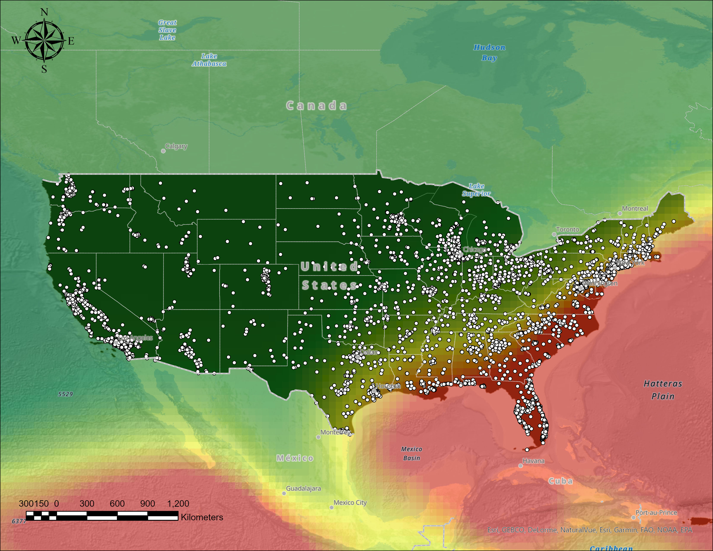

Mitchell Aitken, Julian Cramb, Jackson Cooper
Figure 1. Dangerous areas of hurricane propagation in the united states
In this figure, you can see a map of the United States intersected with the density of hurricanes. The dangerous zones are indicated by the colour of the gradient. Red indicates the most dangerous, and green is the least dangerous. By these observations we can clearly see that the safer areas of United States are farther away from the ocean and more dangerous are closer to the ocean, with the peninsula of Florida being the most at risk. This is no surprise as hurricanes are formed when warm humid air rises and then condenses, and most of this humid air would be coming from the ocean.
| Name of dataset | Documentation |
|---|---|
| Global Hurricane Tracks | In the global hurricane tracks dataset, we are given the tracks of every major hurricane since 1842 until 2017. Each hurricane appears as its own line on the map and follows the whole path of the hurricane from formation to when it disappears. All the data is contained within one feature class and needed to be queried/edited to some extent so that the data was more manageable. |
| Major U.S Cities | In this shapefile, all of the Major U.S cities such as Florida, Chicago, Las Vegas, and hundreds more are each contained within a single feature class. The symbology present is simply a circle for each city. |
| Climate Data | The climate data contains temperature and precipitation from the U.S. We can see daily temperature data along with precipitation, this data set contains some other types such as soil moisture and droughts, however we will not be using this data in our project. We can compare this data to the other sets we have collected and draw conclusions. |
| Breakpoints and Surge Warnings | In the breakpoints and surge warnings the dataset includes all the locations of breakpoints along north and part of central america. These are points of possible life threatening storm surge, there are also watch points which aren’t as high risk however they are still under watch as they could become problematic. This data shows which areas are most at risk of storm surges and which locations are at risk but to a lesser degree. |
| Shapefile of U.S | This dataset simply contains a shapefile for the US and all of the states. This is useful for making any buffer, intersect, or combining any geoprocessing tools with additional datasets we have found to analyze. |
| Hurricane Dorian Data | This dataset contains a shapefile with wind tracks and the radius of the hurricane for Hurricane Dorian |